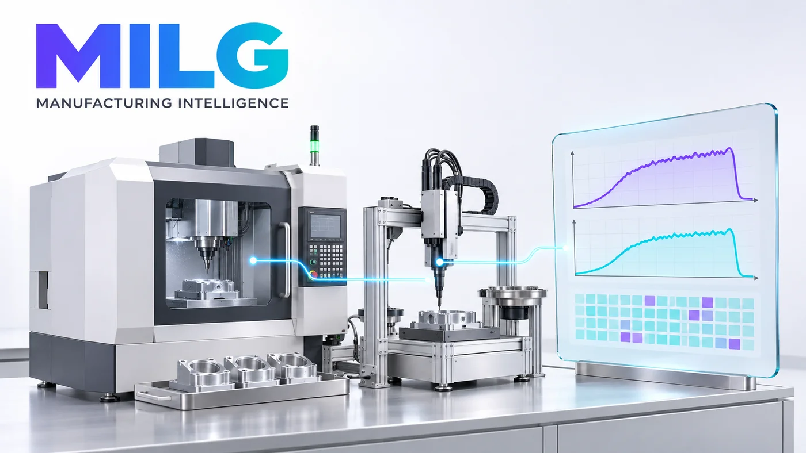

평균값 너머의 변화
토크·회전각·시간 같은 공정 곡선에서
작업 한 번의 패턴과 변화를 살펴봅니다.
공정 곡선 · 기준 비교 · 이상 징후
익숙한 MES는 그대로.
공정 데이터에 담긴 변화를 읽고,
다음 확인이 필요한 지점을 찾습니다.

MILG AI는 제조 공정의 이상 징후와 원인 후보를
근거와 함께 제시하는 소프트웨어를 개발합니다.
현장의 확인과 조치까지 이어지는 분석을 지향합니다.
토크·회전각·시간 같은 공정 곡선에서
작업 한 번의 패턴과 변화를 살펴봅니다.
후보만 나열하지 않고, 기준과 달라진
구간과 관련 작업 이력을 함께 보여줍니다.
분석 결과를 검토하고 조사를 등록하거나
보류해, 판단의 과정을 기록합니다.
선택한 LOT를 따라오는 분석 패널.
새로운 업무 화면을 익히는 부담을 줄입니다.
LOT 선택 → 원인 후보·근거 확인 → 조사 등록 또는 보류
화면과 분석값은 시연용 예시이며, 실제 고객 데이터나 AI 추론 결과가 아닙니다.
공통 모델을 출발점으로, 기업별 데이터와
운영 조건에 맞춰 적용하는 구조를 지향합니다.
기업 간 데이터·학습 결과의 자동 공유 없음
위 도식은 목표 아키텍처입니다.전체 시스템 교체보다 먼저,
해결할 문제와 확인할 지표를 함께 정합니다.
공정·설비·수집 신호와
판정 이력의 연결 여부를 확인합니다.
대상 공정과 기간, 오경보율 등
평가 기준을 합의합니다.
선택 LOT와 작업 이력을 연결하고
분석 패널의 업무 흐름을 맞춥니다.
담당자의 검토 결과를 기록하고
성능과 적용 범위를 점검합니다.
MILG는 제조 데이터가 현장의 판단에 쓰일 수 있도록,
분석 모델과 업무 화면을 함께 개발합니다.
MES를 통해 쌓이는 작업 이력과 공정 곡선을 연결하고,
이상을 발견한 이후의 확인과 조치까지 돕고자 합니다.
도입 검토부터 MES 파트너 협업까지.
현재 상황을 알려주시면 함께 살펴보겠습니다.